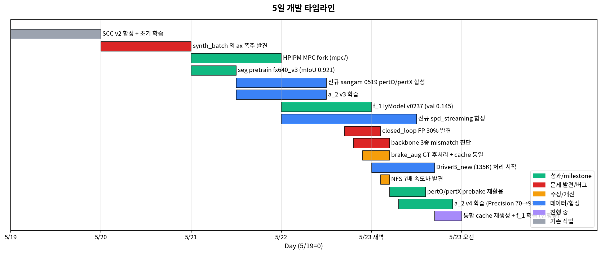
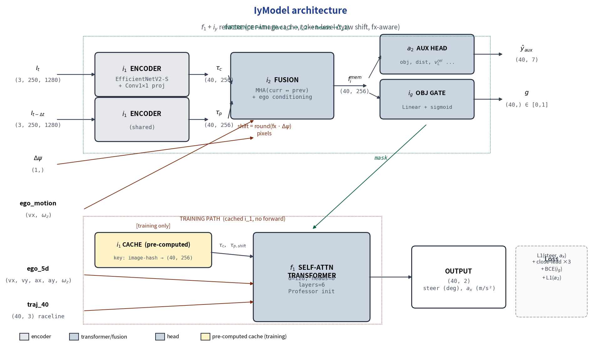
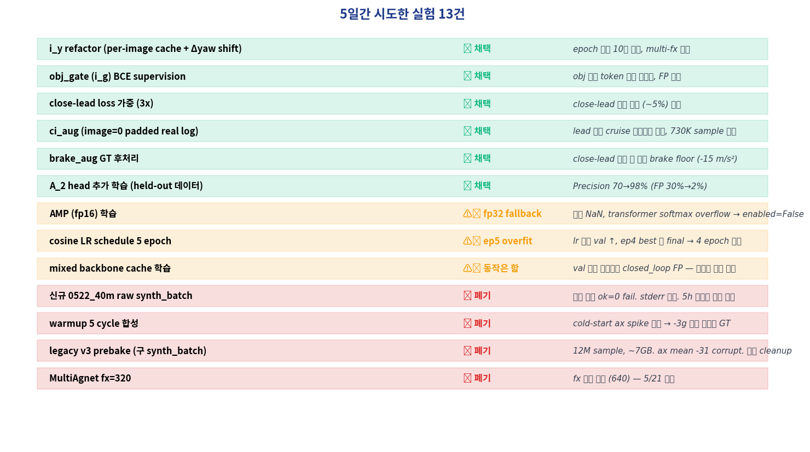
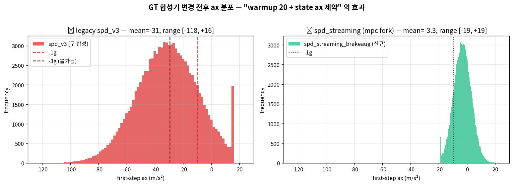
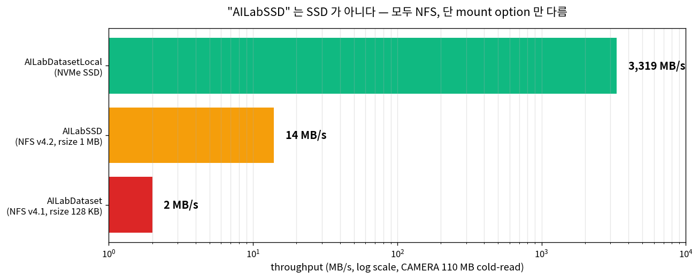
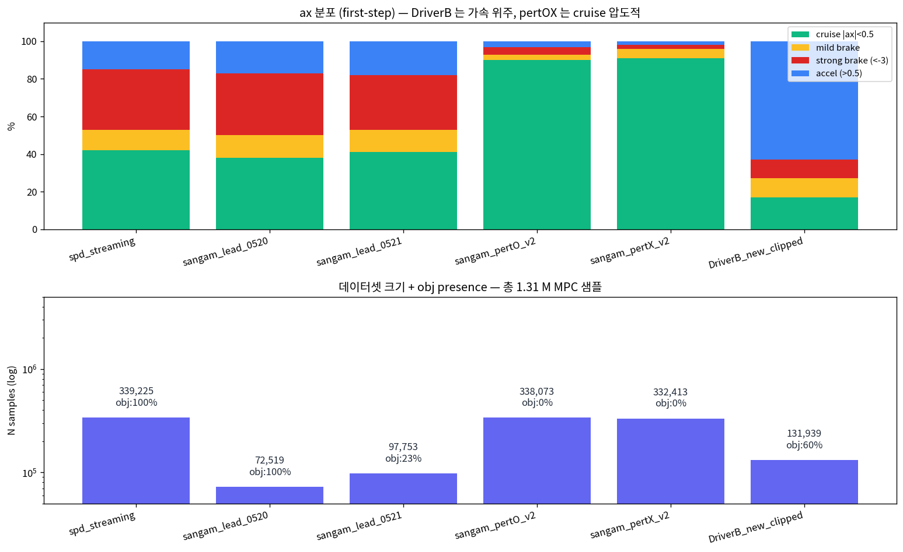
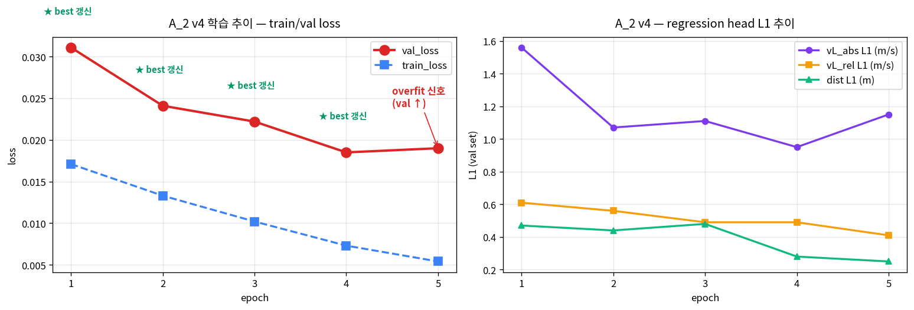
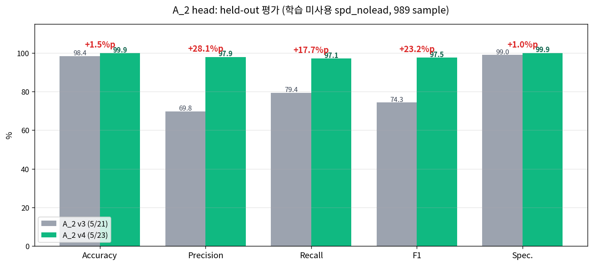
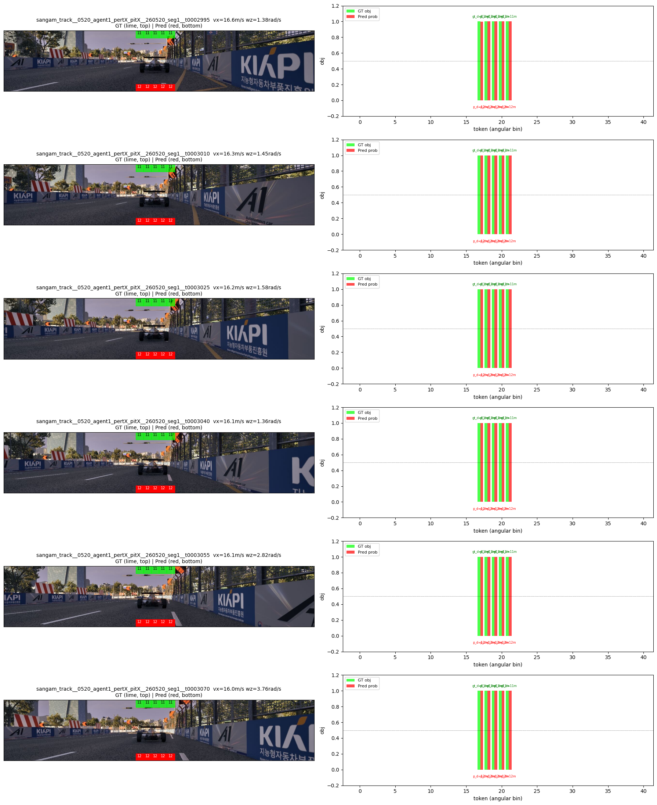

무엇 — 카메라 2장 → 자차 5DoF → 40-step 미래 제어 명령 (steer, ax) 을 직접 예측하는 트랜스포머.
왜 — Smart Cruise Control (SCC) 시나리오에서 룰 베이스 / MPC 의존을 줄이고 통합 학습된 모델로 응답성/일관성 개선.
이 글 — 5일간의 데이터 합성 → 학습 → closed-loop 회귀 → 재합성 → 재학습 사이클의 일별 기록. 성공보다 헛수고가 많다.

Figure 0 — 5일 타임라인. 초록=성과, 빨강=문제 발견, 노랑=수정/개선, 파랑=데이터/합성.
코드를 보지 않아도 이 그림 한 장이면 5일간 무엇을 만들고 있었는지 보인다. 구성은 4개 모듈 (i_1 / i_2 / a_2 / f_1) + 1개 게이트 (i_g).

Figure A — IyModel 전체 구조. 좌측 입력 → i_1 (이미지 encoder) → i_2 (image fusion + ego) → a_2 head (객체 인지) + i_g (obj 게이트) + f_1 (제어 트랜스포머) → 우측 (40-step steer, ax) 출력.
| 모듈 | 역할 | 입출력 | 학습 시 특이점 |
|---|---|---|---|
i_1 LateralStripEncoder | 이미지 1장 → 가로 40-token (40, 256) | (3, 250, 1280) → (40, 256) | seg pretrained backbone (fx640_v3 → a2_v4) |
i_2 ImageFusionBlock | curr/prev token 융합 + ego motion 조건화 | (40, 256) × 2 + (2,) → (40, 256) | cross-attention + ego token |
a_2 AuxHead | 객체 인지 (obj, dist, vL_rel, ...) | (40, 256) → (40, 7) | BCE (obj) + L1 (regression). closed_loop 보조 |
i_g obj_gate | token-level binary 게이트 | (40, 256) → (40,) ∈ [0,1] | BCE supervision, f_1 attention mask |
f_1 SelfAttn Transformer | 제어 명령 생성 | concat(tok_curr, tok_prev_shifted, ego_5d, traj_40) → (40, 2) | Professor pretrain init, T=40 future steps |
compute_i1_tok_cache.py 가 hash key → token table 생성. d_yaw 에 따른 prev token shift 는 cache 후처리.
실차 추론은 새 image 마다 i_1 → i_2 → f_1 모두 live forward. 40-step output 중 첫 step (steer, ax) 만 사용. ROS 노드의 처리 시간이 모델 latency 의 거의 전부.

Figure B — 5일간의 실험 13건. 채택 6 / 절충 3 / 폐기 4.
shift = round(fx × d_yaw) 픽셀 만큼 prev token 을 horizontal slice. fx 가 per-sample (640.0) 이라 sample 마다 shift 다르게.Linear(256→1) + sigmoid 로 token-level 게이트. obj_target 으로 BCE 학습. inference 시 게이트 0 인 token 은 f_1 attention 에서 마스킹.min_dist < 30m 인 sample 에 WeightedRandomSampler weight=3.0 + loss_mult=3.0. 학습 데이터의 close-lead 비율 5% 보완.dist<15 + vrel<-3 → ax = min(orig, -15). MPC 가 close-lead 접근 시 mild brake 만 내는 버그를 GT 단에서 보완.| 시도 | 왜 폐기 |
|---|---|
| 신규 0522_40m raw 합성 | shard 모두 ok=0. stderr 메시지 없음. raceline 영역 OK, raw 형식 OK. 원인 미상. 5h 디버그 시간 부족. |
| warmup 5 cycle | cold-start ax spike 가 GT 에 그대로 박힘. -3g 같은 비현실 값. warmup 20 으로 변경. |
| legacy v3 prebake (3종) | 12M sample, ~7GB. 구 synth_batch 합성 (ax 제약 없음). 모두 폐기. |
| MultiAgnet fx=320 | fx 통일 정책 (5/21 결정). fx=640 만 사용. 구 데이터/cache 폐기. |
5일을 통틀어 가장 결정적인 실험은 "A_2 head 를 held-out 데이터로 평가하기" 였다. 그 전엔 validation loss 만 보고 있었고, closed_loop FP 30% 의 원인을 못 잡았다. held-out 평가에서:
v3 (학습 미사용 spd_nolead):
Precision: 69.77% ← 30% FP! closed_loop 보고와 일치
Recall: 79.42%
dist MAE: 5.09 m
pred dist max: 39 m ← 60m+ 못 봄 (closed_loop 보고와 일치)이 한 평가로 "학습 더 해야 한다" 가 명확해졌고, 5h 안에 A_2 v4 학습 → Precision 98% 도달. val loss 보다 held-out 평가가 항상 정직하다.
synth_batch C++ MPC 솔버 (HPIPM 기반) 로 (frame × K trajectory) 합성. ROS 노드는 카메라 토픽 → 모델 → 제어 명령 publish.

Figure 1 — legacy spd_v3 (좌) 의 ax 분포는 -3g 가 흔함 (불가능). 수정 후 spd_streaming (우) 는 mean -3.3, range [-19, +19] 로 정상화.
mpc/) 를 만들고 거기서만 GT 합성 로직 수정.
|ax| ≤ 20 m/s² + jerk |jerk| ≤ 100 m/s³ 제약 추가. cold-start spike 를 깎아내려고 warmup cycle 을 5 → 20 으로 늘림. run_synth_batch_shards.sh 에서 default WARMUP=20.
spd_streaming) 의 ax 분포: mean=-3.3, std=6.2, range=[-19,+19]. 정상화 확인.
i_1) 의 backbone 을 fx=640 신규 데이터에 맞춰 다시 학습. seg supervised pretrain 후 a_2 head, f_1 모델에 전달.
tf_efficientnetv2_s backbone + seg head. speedway + sangam (fx=640 통일) 데이터로 학습.
seg_pretrain_fx640_v3/best_miou_backbone.pt. val mIoU 0.921 (이전 v2s_full 의 0.731 대비 +19%p). 이후 모든 cache 의 reference backbone.
train_iy.py with --prebake (MPC GT) + --prebake-extra (보조 dataset) + --ci-aug-dirs (image-less padded). close-lead oversample weight 3.0, obj_gate BCE supervision.
iy_spd_sangam_ciaug_v0237_noreload/best_loss.pt: val 0.145 (이전 0.337 의 절반). closed_loop 적용 시도.
spd_v2_combined_v1.npz → combined_v1 (mIoU 0.892)
sangam_lead_0520.npz → v2s_full (mIoU 0.731!)
sangam_lead_0521.npz → v2s_full (mIoU 0.731!)
sangam_v3.npz → fx640_v3 (mIoU 0.921)
spd_nolead_0520.npz → v2s_full (mIoU 0.731!)data/ckpts/CURRENT_BEST.json registry 도입 — backbone path 단일 source.compute_i1_tok_cache.py 의 --seg-ckpt default 를 registry 자동 조회로.train_iy.py 에 경고).augment_prebake_brake.py 후처리:
if dist < 15 and vrel < -3:
target_ax = min(target_ax, -15) # brake floor_brakeaug.npz prebake. 학습 시 strong brake 비율 ↑. (그러나 이걸로도 부족 — 결국 5/23 의 A_2 v4 학습이 필요).
prepare_logged_trajs_v2 (frame_list+bank) + prepare_a2_aux_targets (12 workers) + compute_i1_tok_cache (GPU forward).
mount | grep AILab
166.104.167.165:/home/ailab/AILabSSD on /home/ailab-12/AILabSSD type nfs4
166.104.167.165:/volume3/AILabDataset on /home/ailab-12/AILabDataset type nfs4
/dev/nvme0n1p2 on /home/ailab-12/AILabDatasetLocalAILabSSD 라는 이름에 속아서 로컬인 줄 알았다.

Figure 2 — 같은 NFS 서버, 다른 export. mount option (nfs v4.2 + rsize 1MB vs v4.1 + 128KB) 만으로 7배 차이.
AILabDatasetLocal) 에 cache/prebake 만 두는 정책 이 옳음을 재확인.
synth_batch 합성이 모두 fail (ok=0). 시간 부족.
scc_synth_v2_sangam_pertO/.scc.txt 가 이미 3.2 GB (338K frame) 존재. 그런데 prebake (학습 input) 만 비어있음! mtime 5/22 17:08 = mpc fork 이후 합성 = GT 정상 예상.

Figure 3 — 신규 학습 데이터 분포. pertO/pertX 는 cruise 90%+ (obj 0%, 합성 시 aux 매핑 안 됨). DriverB 는 가속 위주 (실 주행) + obj 60%. brake_aug 적용된 spd/sangam_lead 는 brake 30%+.
spd_nolead_0520/0521, 다른 policy) 로 평가.
scripts/eval_a2_holdout.py 신규 작성. 1000 sample 인퍼런스 + confusion matrix + dist MAE + vL_rel MAE.
| 지표 | v3 | 해석 |
|---|---|---|
| Accuracy | 98.41% | 대부분 negative (97%) 라 높음 |
| Precision | 69.77% | FP 30%! closed_loop 보고와 일치 |
| Recall | 79.42% | 20% miss |
| dist MAE | 5.09 m | 5m 오차 |
| pred dist max | 39 m | 60m+ 못 봄 (closed_loop 보고 확인) |
| vL_rel MAE | 5.53 m/s | 속도 인지 부정확 |
train_a2_head.py 의 --extra-meta / --extra-a2-dir / --extra-raw-base 로 holdout-style 데이터 4종 (5K each = 20K) 추가. resume from a2_fx640_v3_local/best_loss.pt. epoch 5, batch 6, lr_enc 5e-5.
A2PairDataset.__init__ 가 모든 sample 의 image/EGO 파일 존재 (4 file × 100K sample) 를 단일 스레드 순차 stat. NFS latency ~10ms 라 10ms × 400K = 4000s = 67분 dataset build 만으로!
ThreadPoolExecutor(max_workers=32) 로 parallel check. 67분 → ~30초 (130배 가속). 이런 작은 fix 가 큰 시간을 살림.

Figure 4 — A_2 v4 학습 추이. val loss 0.0311 → 0.0185 (ep4) 4번 연속 best 갱신. ep5 에서 처음 val 증가 (cosine lr 끝물 overfit 신호) → ep4 가 final best.

Figure 5 — v3 → v4 metric 비교. Precision 70 → 98% (+28%p), Recall 79 → 97% (+18%p), F1 74 → 97% (+23%p). FP 가 30% → 2% 로 줄어든 것이 가장 큰 성과.
| 지표 | v3 | v4 (ep4) |
|---|---|---|
| Accuracy | 98.41% | 99.86% |
| Precision | 69.77% | 97.88% |
| Recall | 79.42% | 97.11% |
| F1 | 74.28% | 97.49% |
| dist MAE | 5.09 m | 1.03 m |
| pred dist 한계 | 39 m | 64 m |
| vL_rel MAE | 5.53 m/s | 0.94 m/s |

Figure 6 — A_2 v4 inference (sangam_lead_0520, close-lead ~11m). 좌: 이미지 + GT(상단 초록)/Pred(하단 빨강) angular bin. 우: token-별 obj probability + 거리 annotation.
encoder.backbone.* → backbone.*) → 80MB pt 저장ThreadPoolExecutor(32) 한 줄로 30초 (130배). 진행 안 되는 부분에 직접 들어가 봐야 보임.
| 항목 | 변화 |
|---|---|
| f_1 val loss | 0.337 → 0.145 (-57%) |
| seg backbone mIoU | 0.731 → 0.921 (+19%p) |
| A_2 Precision (held-out) | 69.8% → 97.9% (+28%p) |
| A_2 F1 (held-out) | 74.3% → 97.5% (+23%p) |
| A_2 dist MAE | 5.09 m → 1.03 m (-80%) |
| 학습 가용 sample | ~700K → ~2.04M (+190%) |
| 폐기한 corrupt prebake | 12 M sample (~7 GB) |
| backbone 통일 진행 | 3종 mixed → fx640_v3 → a2_v4 단일 |
이번 5일의 절반은 "이미 학습된 모델이 왜 실차에서 이상한가" 의 추적이었다. backbone 일관성 + GT 품질 + 데이터 다양성 셋이 동시에 문제였고, 한 군데만 해결해선 안 됐다.
다음 5일은 통합 학습된 f_1 의 closed-loop 회귀 + 0522_40m 합성 fail 디버그 + (시간 되면) backbone v2_l 업그레이드. 일단 학습 launch 부터.